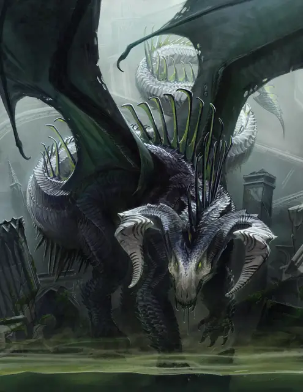

Древний чёрный дракон
Ancient Black Dragon
Громадный Дракон, хаотично-злой

Класс Доспеха 22 (природный доспех)
Хиты 367 (21к20 + 147)
Скорость 40 футов, плавая 40 футов, летая 80 футов
| мод | спас | ||
|---|---|---|---|
| СИЛ | 27 | +8 | +8 |
| ЛОВ | 14 | +2 | +9 |
| ТЕЛ | 25 | +7 | +14 |
| мод | спас | ||
|---|---|---|---|
| ИНТ | 16 | +3 | +3 |
| МДР | 15 | +2 | +9 |
| ХАР | 19 | +4 | +11 |
Навыки Восприятие +16, Скрытность +9
Иммунитет к урону кислота
Чувства слепое зрение 60 футов, тёмное зрение 120 футов, пассивное Восприятие 26
Языки Общий, Драконий
Опасность 21 (33000 опыта)
Бонус мастерства +7
Среда обитания Болото
Особенности
Амфибия. Дракон может дышать и воздухом и под водой.
Легендарное сопротивление (3/день). Если дракон проваливает спасбросок, он может вместо этого сделать спасбросок успешным.
Действия
Мультиатака. Дракон может использовать Ужасающее присутствие. Затем он совершает три атаки: одну укусом, и две когтями.
Укус. Рукопашная атака оружием: +15 к попаданию, досягаемость 15 футов, одна цель. Попадание: Колющий урон 19 (2к10 + 8) плюс урон кислотой 9 (2к8).
Коготь. Рукопашная атака оружием: +15 к попаданию, досягаемость 10 футов, одна цель. Попадание: Рубящий урон 15 (2к6 + 8).
Хвост. Рукопашная атака оружием: +15 к попаданию, досягаемость 20 футов, одна цель. Попадание: Дробящий урон 17 (2к8 + 8).
Ужасающее присутствие. Все существа на выбор дракона, находящиеся в пределах 120 футов от него и знающие о его присутствии, должны преуспеть в спасброске Мудрости Сл 19, иначе станут испуганными на 1 минуту. Существо может повторять этот спасбросок в конце каждого своего хода, оканчивая эффект на себе при успехе. Если спасбросок существа был успешным, или эффект на нём окончился, оно получает иммунитет к Ужасающему присутствию этого дракона на следующие 24 часа.
Кислотное дыхание (перезарядка 5–6). Дракон выдыхает кислоту 90-футовой линией шириной 10 футов. Все существа в этой линии должны совершить спасбросок Ловкости Сл 22, получая урон кислотой 67 (15к8) при провале, или половину этого урона при успехе.
Легендарные действия
Дракон может совершить 3 легендарных действия, выбирая из представленных ниже вариантов. За один раз можно использовать только одно легендарное действие, и только в конце хода другого существа. Дракон восстанавливает использованные легендарные действия в начале своего хода.
Обнаружение. Дракон совершает проверку Мудрости (Восприятие).
Атака хвостом. Дракон совершает атаку хвостом.
Атака крыльями (стоит 2 действия). Дракон бьёт своими крыльями. Все существа в пределах 15 футов от дракона должны преуспеть в спасброске Ловкости Сл 23, иначе получат дробящий урон 15 (2к6 + 8) и будут сбиты с ног. После этого дракон может пролететь на расстояние, не превышающее половину скорости полёта.
Логово
Чёрные драконы обитают в болотах на оборванных окраинах цивилизации. Логово чёрного дракона обычно располагается в мрачных пещерах, гротах или руинах, которые хотя бы частично затоплены, и в которых есть заводи, в которых дракон может отдыхать, переваривая своих жертв. Логово заполняют изъеденные кислотой кости предыдущих жертв и облепленные мухами останки свежих убитых. На всё это взирают обваливающиеся статуи. Многоножки, скорпионы и змеи населяют логово, наполненное вонью смерти и разложения.
Действия логова
При значении инициативы «20» (в случае ничьей проигрывает всем конкурентам) дракон совершает действие логова, чтобы вызвать один из следующих эффектов; дракон не может использовать один и тот же эффект два раунда подряд:
• Вода в заводях, которые дракон видит в пределах 120 футов, вздымаются в попытке захватить с собой стоящих рядом. Все существа, находящиеся на земле в пределах 20 футов от такой заводи, должны преуспеть в спасброске Силы Сл 15, иначе волна сбивает их с ног и утягивает на 20 футов в воду.
• Облако роящихся насекомых заполняет сферу 20-футового радиуса с центром в точке, которую выберет дракон в пределах 120 футов от себя. Это облако огибает углы и остаётся на месте, пока дракон не рассеет его действием, не воспользуется другим действием логова или не умрёт. Облако создаёт слабо заслонённую местность. Все существа в этом облаке, когда оно появляется, должны совершить спасбросок Телосложения Сл 15, получая при провале колющий урон 10 (3к6), или половину этого урона при успехе. Существо, закончившее свой ход в облаке, получает колющий урон 10 (3к6).
• Магическая тьма распространяется от точки, которую выберет дракон в пределах 60 футов от себя, создавая сферу тьмы с радиусом 15 футов, пока дракон не рассеет её действием, не воспользуется другим действием логова или не умрёт. Тьма огибает углы. Существа с тёмным зрением не могут видеть сквозь эту тьму, а немагический свет не может её осветить. Если область действия этого эффекта пересечётся с областью света, созданного заклинанием с уровнем не больше 2, заклинание, создавшее свет, рассеивается.
Местные эффекты
Регион, в котором есть логово легендарного чёрного дракона, искажается драконьей магией, которая создаёт один или несколько следующих эффектов:
• Путешествия в пределах 6 миль вокруг логова занимают вдвое больше времени из-за того, что крепкие, густо сплетающиеся растения разрастаются еще сильнее, а топи становятся менее проходимыми, заполняясь дурно пахнущей грязью.
• Водные источники в пределах 1 мили от логова сверхъестественным образом портятся. Врагов дракона, выпивших воду из них, стошнит через несколько минут.
• Туман, слабо заслоняющий местность, покрывает землю в пределах 6 миль от логова.
• Если дракон умирает, растительность остаётся такой, какой она уже выросла, но прочие эффекты угасают за 1к10 дней.
Опциональные правила
Драконы и врождённое колдовство. Драконы обладают врождёнными способностями к колдовству, и могут с возрастом осваивать новые заклинания при использовании этого опционального правила.
Молодые и более старые драконы могут накладывать количество заклинаний, равное их модификатору Харизмы. Каждое заклинание может быть наложено лишь один раз за день, не требуя материальных компонентов, и уровень заклинания не может превышать трети показателя опасности дракона (округляя в меньшую сторону).
Бонус к попаданию атак заклинаниями дракона равен его бонусу мастерства + его бонус Харизмы. Сл спасбросков от заклинаний дракона равна 8 + его бонус мастерства + его модификатор Харизмы. (Monster Manual)
Драконы и врождённое колдовство. Этот дракон от природы может накладывать четыре заклинания, 1/день каждое, и ему не требуются для этого материальные компоненты. Уровень каждого заклинания не может быть выше 7-го. Заклинание дракона, имеют Сл спасброска 19, и он имеет +11 к попаданию атаками заклинаниями.
Ниже приведен список предлагаемых заклинаний, но вы также можете выбрать заклинания, отражающие характер дракона. Дракон, который от природы накладывает заклинания друидов, ведёт себя иначе, чем тот, кто накладывает заклинания колдуна. Вы также можете дать дракону заклинания более высокого уровня, чем позволяет это правило, но такая настройка может повысить ПО дракона — особенно если эти заклинания наносят урон или накладывают состояния на цели.
• Глухота/слепота [blindness/deafness];
• Сотворение или уничтожение воды [create or destroy water];
• Нашествие насекомых [insect plague];
• Рост растений [plant growth]. (Fizban's Treasury of Dragons)
Персонализация дракона. Как уже говорилось в «Руководстве Мастера», вы можете настроить блок статистики любого дракона, чтобы отразить его уникальный характер. Незначительные изменения, такие как приведенные ниже, легко сделать, и они не влияют на ПО дракона. (Fizban's Treasury of Dragons)
Языки. Большинство драконов предпочитают говорить на Драконьем, но для общения с союзниками и приспешниками изучают Общий. Но, учитывая высокий Интеллект и продолжительный срок жизни, драконы могут легко выучить дополнительные языки. Вы можете добавить языки в блок статистики дракона.
Навыки. Большинство драконов владеют навыками Восприятие и Скрытность, а многие драконы владеют дополнительными навыками. Как и в случае с языками, вы можете изменить список навыков дракона (даже удвоить бонус мастерства), чтобы отразить его интересы и занятия. Вы также можете наделить дракона владениями инструментами, особенно если дракон проводит время в гуманоидной форме.
Заклинания. Опциональное правило «Бестиария» о том, чтобы сделать драконов с врожденным колдовством, — это простой способ добавить драконам разнообразия, не влияя на их ПО. В Главе 5 «Дракономикон» предлагаются списки заклинаний для разных видов драконов, но вы также можете выбрать заклинания, отражающие характер дракона. Дракон, который от природы накладывает заклинания друидов, ведёт себя иначе, чем тот, кто накладывает заклинания колдуна. Вы также можете дать дракону заклинания более высокого уровня, чем позволяет это правило, но такая настройка может повысить ПО дракона — особенно если эти заклинания наносят урон или накладывают состояния на цели.
Другие черты и действия. Вы можете заимствовать черты и действия у других монстров, чтобы придать дракону уникальную изюминку. Рассмотрим эти примеры:
Изменение формы. Вы можете решить, что дракон приобретает это действие в более раннем возрасте, чем обычно, особенно если вы хотите представить в своей кампании дракона в гуманоидной форме. (См. металлические драконы).
Поглощение урона. Вы можете решить, что красный или золотой дракон не только не получает урон от огня, но и исцеляется от него. (См. мясной голем [flesh golem]).
Облёт. Дракон - проворный летун, быстро вылетающий из зоны досягаемости врагов. (См. перитон [peryton]).
Подражание. Изображение персонажей или их союзников может стать забавным трюком для хитрого дракона. (См. кенку [kenku]).
Омоложение. Вы можете решить, что драконы в вашей кампании, будучи неотъемлемой частью Материального плана, почти невозможно уничтожить. Жизненная сущность дракона может храниться в яйце, из которого он появился на свет, в его кладе или в пещерном зале в центре мира, так же как сущность лича спрятана в филактерии. (См. лич [lich]).
Особые чувства. У большинства драконов есть слепое зрение и темное зрение. Вы можете улучшить зрение до истинного зрения или наделить дракона скоростью рытья или чувством вибрации. (См. зрение и свет).
Прокладывание туннеля. Эта особенность может быть присуща любому дракону, обладающему скоростью копания - он может двигаться сквозь твёрдую породу, оставляя за собой туннель. (См. бурый увалень [umber hulk]).
Описание
Наиболее злобные и подлые из цветных драконов, чёрные драконы собирают сокровища погибших народов. Этим драконам отвратительно видеть, как слабые процветают, и они упиваются моментами краха королевств гуманоидов. Они располагают свои логова в смрадных болотах и ветхих руинах, там, где когда-то были такие царства.
Богатства древних. Чёрные драконы создают клады из сокровищ и магических предметов рухнувших империй и завоёванных королевств, чтобы напомнить себе о собственном величии. Чем больше прошлых цивилизаций дракон переживает, тем больше заявляет он прав на богатства нынешней.
Морда чёрного дракона, с глубоко посаженными глазами и широкими ноздрями, очень напоминает череп. Его изогнутые, составные рога меняют свой цвет от костного у основания до мёртвенно-чёрного у кончиков. С возрастом плоть чёрного дракона у его рогов и на скулах портится, становясь будто бы проеденной кислотой, оставляя лишь тонкий слой шкуры, которая лишь подчёркивает его схожесть с черепом. Голова чёрного дракона покрыта шипами и рогами. Его язык плоский и раздвоенный, а изо рта течёт слюна, чей кислотный запах дополняет вонь гнилых растений и тухлой воды, исходящую от дракона.
Когда чёрный дракон вылупляется, его чешуя глянцево-чёрная, но со временем она тускнеет и толстеет, помогая сливаться с трясиной и руинами, служащими ему домом.
Грубые и жестокие. Все цветные драконы злы, но чёрные драконы особо выделяются садизмом. Они живут моментами, когда жертва умоляет о пощаде, и часто предлагает иллюзию спасения или побега, прежде чем покончить с врагом.
Чёрный дракон нападает в первую очередь на самых слабых, обеспечивая себе скорую и жестокую победу, которая подогревает его эго и ужасает остальных противников. На грани поражения чёрный дракон сделает что угодно, чтобы спастись самому, но предпочтёт смерть, не давая другому существу получить над собой власть.
Противники и слуги. Чёрные драконы ненавидят и боятся других драконов. Они шпионят за своими драконьими соперниками издали, выискивая возможность убить более слабых и избежать более сильных. Если более сильный дракон будет ему угрожать, чёрный дракон покинет своё логово и отправится на поиски новой территории.
Злые людоящеры почитают чёрных драконов и служат им, устраивая набеги на поселения гуманоидов ради сокровищ и еды, которые они преподносят драконам в качестве дани. Они также возводят грубые подобия дракона на границах владений своего драконьего хозяина.
Злобное влияние чёрного дракона может также привести к спонтанным появлениям ползающих насыпей, которые ищут и убивают добрых существ, приближающихся к логову чёрного дракона.
Кобольды населяют логова многих чёрных драконов, как паразиты. Они становятся жестокими, как их тёмные хозяева, и часто пытают и мучают пленных укусами многоножек и скорпионьими жалами, прежде чем подать несчастных в качестве блюда для драконьего пиршества.
См. дополнительно статью: "Бестиарий: Драконы"